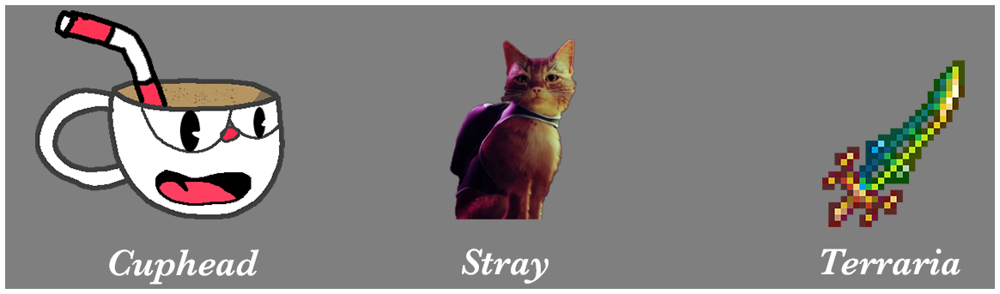

With only a group of 27 to 28 people stray was created in 2022 in a effort to create a immersive gaming expirence like never before. The game itself foucses on the story of cat in a dsitopian world were a small amount of the human and cat population exsits . Paired with goregous graphics and stylized game play it brough a bright and gorgeous game to life from the point of view of a cat. Using florecent lights and cinema like gameplay aling with a gorgeous music score it helps bring this small game to life making it one of the best indie games to date.
Although a farley new game Stray has been praised for its graphic prouase and story telling. In the year that this gae dropped it won two awards in 2022 Game award. Stray only 6 months out of its release won awards for Best independent Game following its second award for The award for the best Debut Indie game of 2022. With these two awards praising the game many players and developers are now putting stray in the top ten best indie games of the 2020's.
 =